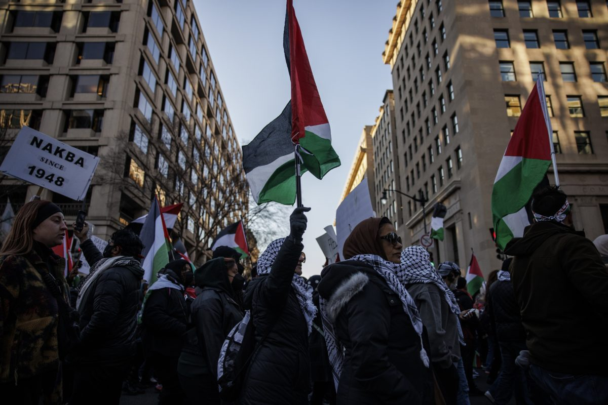

Post October 7 Pro Palestine Activism and Political Engagement in the United States
This paper asks how participation in the post October 7 protest wave was associated with institutional political engagement among Americans sympathetic to the Palestinian cause in 2024 and what that relationship reveals about how social movements interact with democratic institutions.

Photo: Pro-Palestine demonstrators march in Washington D.C. Source: Getty Images.
The protest wave that followed October 7, 2023 became one of the largest and most sustained U.S. mobilizations around a foreign policy issue in recent history. Using Crowd Counting Consortium data, Erica Chenoweth and her coauthors report nearly 12,400 pro-Palestine protest events and at least 1.5 million participants in the United States between October 7, 2023 and June 7, 2024 — the largest and most sustained U.S. protest wave sparked by a foreign event since the consortium began systematic counting in 2017.
Research Question: How was participation in the post October 7 protest wave associated with institutional political engagement - voting, contacting officials, attending meetings, and volunteering — among Americans sympathetic to the Palestinian cause in 2024?
Scholars often debate whether protest pulls people away from institutional channels or instead pushes them toward voting, lobbying, and pressure on elected officials. This debate is not merely academic. If protest substitutes for institutional engagement, then large-scale movements may generate energy that never reaches the formal levers of democratic power. If protest and institutional engagement are complementary, however, then social movements may serve as an on-ramp to sustained civic participation.
The post–October 7 case is particularly valuable because Palestine solidarity activism has often been portrayed as oppositional to institutional politics, as a movement that rejects rather than engages the formal system. This paper tests that characterization directly using nationally representative survey data.
This paper argues that, among respondents sympathetic to Palestinians, participation in protest was associated with higher levels of institutional political engagement, especially contacting federal officials, attending public meetings, and volunteering. However, it was not significantly associated with voting. The strongest defensible claim is association rather than a clean causal effect, because the evidence comes from observational survey data. Nonetheless, the findings speak clearly to the question of whether protest and institutional politics are complements or substitutes in the case of Palestine solidarity activism in 2024.
Three strands of scholarship inform this project: research on protest and electoral outcomes, research on political participation repertoires, and issue-specific work on the Palestine solidarity movement in the United States.
One major strand of scholarship argues that protest can shape electoral and institutional outcomes. Gillion and Soule analyze congressional-district protest, electoral outcomes, and challenger entry, finding that liberal protests are associated with higher Democratic two-party vote share, while conservative protests track Republican vote share. They also argue that protest can highlight incumbents' failures and encourage challengers to enter later races.
More recently, Klein Teeselink and Melios study the 2020 Black Lives Matter protests and find that protest activity significantly increased Democratic vote share in affected counties. These aggregate-level studies support the view that protest can spill into electoral politics rather than remaining outside it.
A second strand of research is more skeptical. Engist and Schafmeister examine monthly voter registration data from 2,136 U.S. counties in the context of Black Lives Matter and conclude that local protest exposure did not increase voter registration in the aggregate. They also report similarly insignificant effects across party lines and when accounting for protest violence. This warns against assuming that a large protest wave automatically produces broader institutional engagement.
Oser offers a useful framework for reconciling these mixed findings. Her argument is that researchers should study how individuals combine different political acts within broader participation repertoires. In that framework, protest is one political act among many, and the key empirical question becomes whether protesters are also more likely to contact officials, attend meetings, volunteer, sign petitions, or vote. This approach is especially helpful here because Palestine solidarity activism has often been portrayed as oppositional to institutional politics, when in fact the two may coexist and reinforce one another.
Classic work by Opp and Roehl argues that repression can deter protest by raising the costs of action, but that effects depend on broader incentives and mobilizing conditions. In the specific case of Palestine solidarity activism, Deeb and Winegar situate the 2023–2024 campus movement within a longer history of activism and repression in U.S. academia, arguing that resistance and repression have repeatedly fed one another — meaning that institutional barriers may demobilize some while intensifying commitment among others.
Chenoweth and her coauthors describe the post–October 7 movement as especially large and largely nonviolent by Crowd Counting Consortium measures, providing the empirical baseline against which individual-level survey analysis can be situated.
This project uses the ANES 2024 Time Series Study, the American National Election Studies' flagship survey, which uniquely combines pre-election measures of Palestine-related attitudes with post-election measures of protest participation and civic engagement.
The American National Election Studies (ANES) 2024 Time Series Study fielded its pre-election survey from August 3 to November 5, 2024 and its post-election reinterview from November 7, 2024 to February 17, 2025. The combined sample includes 5,521 respondents. That timing makes the study especially valuable: it captures Palestine-related attitudes before the election and protest participation and civic engagement outcomes after it.
Why ANES? No other nationally representative survey in 2024 simultaneously measured pro-Palestine attitudes and protest participation and institutional engagement outcomes. The ANES pre/post design allows us to study the intersection of issue sympathy and civic behavior across the full adult population.
The analysis focuses on a subgroup of respondents who can reasonably be classified as pro-Palestine sympathizers. A respondent is included if they meet at least one of three criteria:
This broad, inclusive definition yields 2,562 respondents after dropping observations with missing post-election survey weights. This approach improves on a simple "activists versus everyone else" comparison because it compares protesters with non-protesters who already share broadly similar issue preferences.
Protest participation (V242029): Whether the respondent reported joining a protest march, rally, or demonstration in the past 12 months (1 = yes, 0 = no). Within the pro-Palestine sympathizer subgroup, 179 respondents in the full sample reported protesting.
| Variable | ANES Item | Type |
|---|---|---|
| Contacted federal elected official | V242036 | Primary |
| Voted in 2024 election | V242065 | Primary |
| Attended a public meeting | V242034 | Secondary |
| Volunteered | V242035 | Secondary |
All models control for party identification (V241227x, 7-point scale), ideology (V241177, 7-point liberal-conservative scale), education (V241465x, 5-category summary), sex (V241550), and race/ethnicity (V241501x).
The analysis proceeds in two steps. First, weighted descriptive comparisons establish baseline differences between protesters and non-protesters in the subgroup. Second, survey-weighted logistic regression models (quasibinomial family) test whether those differences persist after controls. Average marginal effects are reported to facilitate substantive interpretation. All models use the ANES post-election combined weight (V240103b) as required by ANES documentation when post-election variables are included.
A note on causality: Because this is an observational design, the findings are described as associations rather than causal effects. Respondents who protested may have been more politically engaged before October 7, 2023. Longitudinal data with pre-protest baselines would be needed to make stronger causal claims.
Among pro-Palestine sympathizers, protest participants were dramatically more engaged across nearly every civic dimension examined, with one important exception.
The chart below compares weighted participation rates between pro-Palestine sympathizers who reported protesting and those who did not, across four forms of political engagement.
Protesters were more than four times as likely as non-protesters to have contacted a federal elected official (35% vs. 8%). They were also considerably more likely to attend a public meeting (26% vs. 9%) and volunteer (58% vs. 25%). The one exception is voting: non-protesters reported modestly higher voting rates (22% vs. 15%).
The following models test whether these patterns persist after controlling for party identification, ideology, education, sex, and race. Average marginal effects (AMEs) are reported — these represent the change in probability associated with being a protester, holding all other variables at their observed values.
Protest participation is the strongest predictor in the model (AME = +0.13, p < 0.001). Education is also a significant positive predictor, consistent with long-standing findings that higher education is associated with greater civic engagement. Notably, party identification and ideology are not significant, meaning the protest effect is not simply a proxy for partisanship.
| Predictor | AME | Significance |
|---|---|---|
| Protest (yes vs. no) | +0.127 | *** |
| Education | +0.025 | ** |
| Party ID | −0.004 | n.s. |
| Ideology | −0.011 | n.s. |
| Female | −0.010 | n.s. |
| Race | −0.001 | n.s. |
Protest participation is not a significant predictor of voting (AME = −0.056, p = 0.25). Two other findings stand out. First, education is a highly significant negative predictor of voting, inverting the standard relationship. More educated pro-Palestine sympathizers were less likely to vote. One plausible interpretation is that educated activists were more aware of and alienated by both major candidates' positions on Gaza, leading some to abstain or cast third-party ballots. Second, race is a significant positive predictor of voting.
| Predictor | AME | Significance |
|---|---|---|
| Protest (yes vs. no) | −0.056 | n.s. |
| Education | −0.076 | *** |
| Race | +0.031 | *** |
| Party ID | +0.001 | n.s. |
| Ideology | −0.007 | n.s. |
| Female | −0.001 | n.s. |
The education-voting reversal is one of the most striking findings in this analysis. In virtually every standard model of political participation, education is a positive predictor of turnout. Among pro-Palestine sympathizers in 2024, that relationship flips, suggesting a distinctive mode of disenchanted but organizationally active engagement among educated activists who may have withheld or redirected their electoral participation as a form of political expression.
Both secondary outcomes reinforce the core finding. Protest is associated with an 11 percentage point increase in attending a public meeting (p < 0.01) and a 24 percentage point increase in volunteering (p < 0.001). Education is again a significant positive predictor of both outcomes. Party identification, ideology, and other controls are not significant.
Protest participation among pro-Palestine sympathizers in 2024 was not a substitute for institutional politics. It was, for many, the beginning of a broader and more sustained engagement with the formal channels of American democratic life.
This paper set out to ask how participation in the post–October 7 protest wave was associated with institutional political engagement among Americans sympathetic to the Palestinian cause in 2024. The findings are consistent across three of the four outcomes examined. Among pro-Palestine sympathizers, protest participants were substantially more likely than non-participants to contact a federal elected official, attend a public meeting, and volunteer — even after controlling for party identification, ideology, education, gender, and race.
The relationship between protest and voting tells a more complicated story. The raw descriptive comparison suggested protesters were less likely to vote, but this difference disappears in the multivariate model. Protest is neither a significant positive nor negative predictor of turnout within this subgroup. What does predict lower turnout is education, a finding that inverts the standard relationship between educational attainment and electoral participation.
These findings support Oser's participation repertoire framework. Those who protested were also more likely to lobby, organize, and volunteer, a pattern suggesting the movement reinforced and deepened civic engagement rather than displacing it into purely expressive channels. The findings also contribute to the mixed literature on protest and electoral mobilization: unlike some aggregate-level studies that find protest increases turnout, this individual-level analysis finds no significant relationship between protest and voting.
This distinction matters. The political consequences of the post–October 7 movement may have been felt more through direct pressure on elected officials than through the ballot box — at least in the short term. That is itself a theoretically significant finding: it suggests a movement that was organizationally sophisticated and institutionally oriented without being electorally oriented in the conventional sense.
Because the ANES 2024 is a cross-sectional survey, the relationships estimated here are associations, not causal effects. Respondents who protested may have been more politically engaged before October 7, and the protest measure may be picking up a pre-existing disposition toward civic activism. Longitudinal data with pre-protest baselines would be needed for stronger causal claims.
The ANES protest item asks about any protest in the past 12 months — not Palestine-specific protest. A respondent who marched for abortion rights would be coded identically to a Gaza solidarity demonstrator. That said, this limitation is mitigated by restricting the analysis to pro-Palestine sympathizers, making it more likely that their protest activity overlapped with the relevant movement.
The broad, inclusive definition of pro-Palestine sympathizer (meeting any one of three criteria) yields a large subgroup. A narrower definition, requiring all three criteria, or only strong sympathies might produce sharper results. Future work should test sensitivity to this coding choice.
The ANES may underrepresent some communities particularly active in the movement, including college students, recent immigrants, and Arab and Muslim Americans. The race/ethnicity summary variable does not include a distinct Middle Eastern or North African category, limiting precision for one of the most visible communities in Palestine solidarity activism.
Longitudinal data tracking respondents before and after October 7 would allow stronger causal claims. Richer vote choice data would allow researchers to examine electoral defection. And qualitative or ethnographic work on organizational networks would help explain the mechanisms through which protest translated into the high rates of official contact and volunteering observed here.
All sources follow Chicago Manual of Style (17th edition) citation format. Academic sources are listed first, followed by data and institutional sources.
All statistical analysis was conducted in R (version 4.x) using the survey, tidyverse, and margins packages. Survey-weighted logistic regression models used a quasibinomial family and the ANES post-election combined weight (V240103b). The pro-Palestine sympathizer subgroup (N = 2,562) was defined as respondents meeting at least one of three criteria: favoring humanitarian aid to Palestinians (V241404), siding with Palestinians on the sympathy scale (V241409x > 4), or approving of campus protests against the war in Gaza (V241410 = 1 or 2).